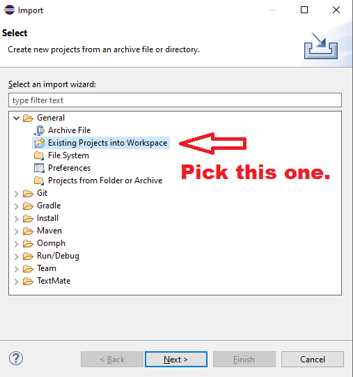
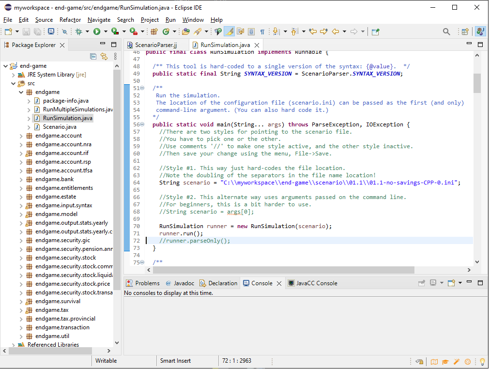

The source code is here.
When you launch Eclipse, you need to point to a workspace folder. A workspace folder contains project folders. Each project folder contains the source code for a project.
These instructions will use a workspace named:
C:\myworkspace\
An example setup:
C:\myworkspace\ [the workspace folder]
C:\myworkspace\end-game [the project folder for end-game]
./settings
docs
input
lib [the various files and folders in the end-game project]
scenario
src
.classpath
.gitignore
.project
LICENSE.txt
README.md
Your setup will be similar, except you can replace C:\myworkspace\ with something else, if you wish.
Next, you need to put the source code into the above folder structure:
Download the Eclipse installer.
Run the installer, and select Eclipse IDE for Java Developers:
Install Eclipse to a convenient location on your computer:

Launch Eclipse, and point it to the workspace directory you created earlier:

The first time you launch Eclipse, it will show you a welcome screen. Close the welcome screen:

Now you will see the main Eclipse window:
Click on Import Projects. Or, from the menu, select File -> Import...
Choose General -> Existing Projects into Workspace:

Point to the end-game project folder:
The result should look like this:


Before you run it, you need to ensure that RunSimulation is pointed to the desired scenario file. Look for this line:
RunSimulation runner = new RunSimulation("C:\\myworkspace\\end-game\\scenario\\01.1\\01.1-no-savings-CPP-0.ini");
In Java code, comments are preceded by // characters. When you place // at the start of a line of code, that means you, in effect, turn it off and prevent it from executing.
In the menu, select Run -> Run As... -> Java application.
To install the JavaCC plugin into Eclipse